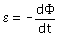

Cuando varía el flujo magnético que atraviesa
una espira se induce en ella una corriente. Ley de Faraday: La f.e.m inducida en una espira cuyo flujo varia con el tiempo viene dada por:  Cuanto más cambie el flujo y menos tiempo tarde en
hacerlo mayor será la f.e.m inducida. Ley de Lenz: El sentido de la corriente inducida es el necesario para crear un flujo magnético que compense el cam-bio de flujo que la origina |